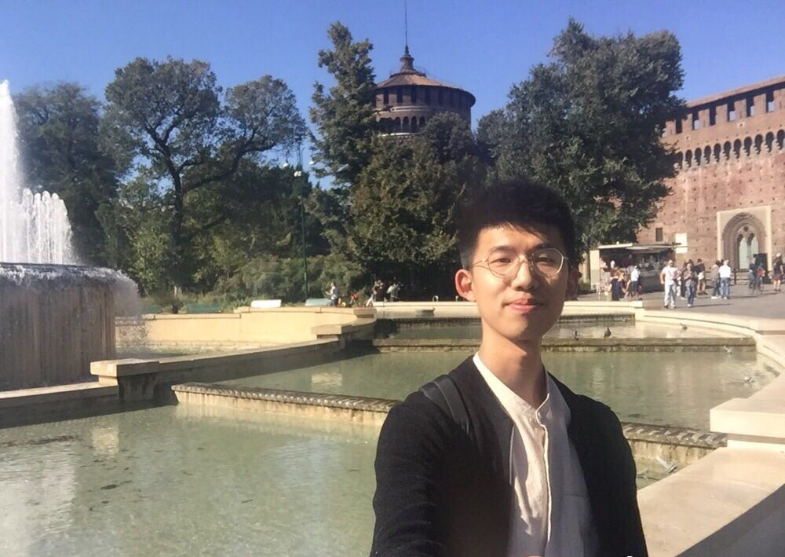
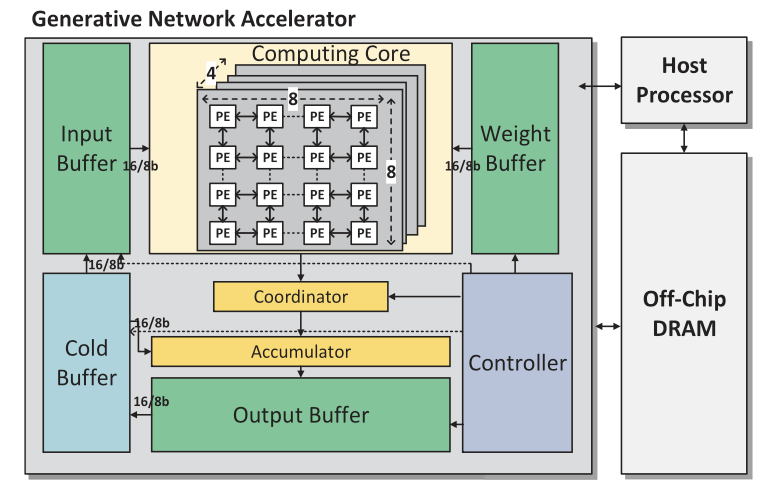
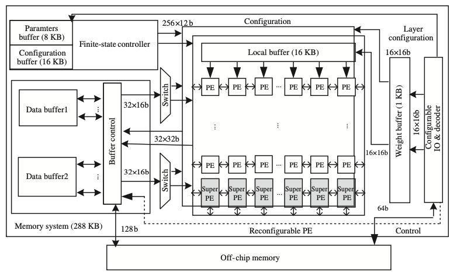

|
Jiale(Loui) Yan
I am now an IC Senior digital engineer at a fabless company, where I work on a ray tracing item for a mobile GPU, supporting for a hardware implementation.
Before becoming a full-time engineer, I obtained my master degree from Tsingahu University(THU), and I focus on energy-efficient architecture design for deep learning.
During this peroid, I was advised by Prof. Shouyi Yin and Prof. Shaojun Wei.
I did my bachelors at Harbin Institute of Technology(HIT).
My current research interests lie in deep learning, ray tracing, computer architecture, reconfigurable computing.
Email: yjl16@tsinghua.org.cn
Email /
CV /
Google Scholar /
Zhihu Tech Blog
|

|
|
Publications
I used to pursue my master degree in Tsinghua University, and I focus on energy-efficient architecture design for deep learning. Some featured works are presented here.
|
|

|
Gna: Reconfigurable and efficient architecture for generative network acceleration
Jiale Yan,
Shouyi Yin,
Fengbin Tu,
Leibo Liu,
Shaojun Wei
TCAD(IEEE Transactions on Computer-Aided Design of Integrated Circuits and Systems), 2018
IEEE,
bibtex
This work aims to accelerate a generative network, which includes CONV layers, DeCONV layers and residual blocks.
It achieves energy efficiency of 2.05 TOPS/W with 61% higher PE utilization than traditional methods in generative network acceleration.
|
|

|
Research on low-power neural network computing accelerator
Jiale Yan,
Ying Zhang,
Fengbin Tu,
Jianxun Yang,
Shixuan Zheng,
Peng OuYang ,
Leibo Liu,
Yuan Xie,
Shaojun Wei,
Shouyi Yin,
SCIENTIA SINICA Informationis, 2019
Sci-China,
bibtex
This study aims to propose a reconfigurable hardware architecture to meet the flexibility requirements of a neural network.
|
|
|
RayTracing-Tech Github
Nowadays ray tracing is a fantastic tech in a rendering pipeline. I am maintaining a repository on GitHub.
This is a paper list about the most important techs and some hard core knowledge about ray tracing. It covers like some
turorials about ray tracing, acceleration structure, traversal strategies, denoise techs, benchmarks and other topics.
I wish this repository could guide people to learn more about ray tracing techs.
|
|
If you are interested in me, please contact me.
|
|
{kind=link}